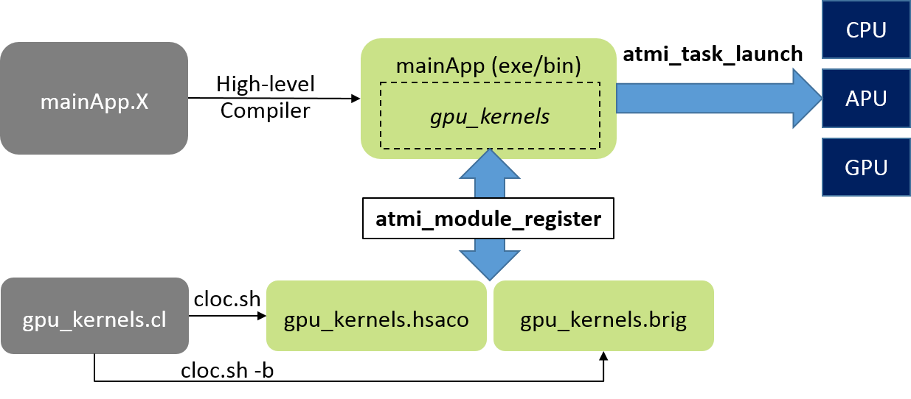

ATMI¶
ATMI (Asynchronous Task and Memory Interface) Asynchronous Task and Memory Interface, or ATMI, is a runtime framework and declarative programming model for heterogeneous CPU-GPU systems. It provides a consistent API to create task graphs on CPUs and GPUs (integrated and discrete). ATMI is a declarative programming model, where high-level tasks can be simply described by using a few predefined C-style structures. The task description includes specifying its granularity, dependencies to other tasks, data requirements and so on. The ATMI runtime, based on the task graph, will perform task scheduling and memory management that is optimal for the underlying platform. ATMI provides a rich and flexible user interface so that the end user can relinquish scheduling to the runtime (default behavior) or take full control of scheduling and mapping, if desired. The target audience for ATMI is application programmers or middleware developers for high-level languages.
Compilation and Runtime Workflow¶
The below figure depicts the ATMI runtime workflow with CLOC as the compiler utility.
atmi-workflow
What’s New?¶
ATMI v0.3¶
- ATMI-RT: runtime library to manage tasks
- ATMI-C: language extension for declaring tasks
- A comprehensive machine model for CPUs, integrated GPU (APU) and discrete GPU (dGPU) systems.
- Consistent task management API for CPU tasks and GPU tasks
- GPU kernel language: CL (more kernel language support to come in the future)
- CPU tasks: support for multi-dimensional task grids (similar to GPU tasks)
- Task dependencies
- Task groups
- Recursive tasks (tasks creating other tasks)
- Efficient resource management
- Signaling among dependent tasks
- Kernel argument memory regions
- Reuse of task handles
- Data movement API (synchronous and asynchronous options)
- Asynchronous data movement is treated as an ATMI task in the task graph.
- Devices supported: AMD Carrizo and Kaveri APUs, and AMD Fiji dGPU
- Runtimes used: ROCm v1.2
License¶
MIT License
Copyright © 2016 Advanced Micro Devices, Inc.
Permission is hereby granted, free of charge, to any person obtaining a copy of this software and associated documentation files (the “Software”), to deal in the Software without restriction, including without limitation the rights to use, copy, modify, merge, publish, distribute, sublicense, and/or sell copies of the Software, and to permit persons to whom the Software is furnished to do so, subject to the following conditions:
The above copyright notice and this permission notice shall be included in all copies or substantial portions of the Software.
THE SOFTWARE IS PROVIDED “AS IS”, WITHOUT WARRANTY OF ANY KIND, EXPRESS OR IMPLIED, INCLUDING BUT NOT LIMITED TO THE WARRANTIES OF MERCHANTABILITY, FITNESS FOR A PARTICULAR PURPOSE AND NONINFRINGEMENT. IN NO EVENT SHALL THE AUTHORS OR COPYRIGHT HOLDERS BE LIABLE FOR ANY CLAIM, DAMAGES OR OTHER LIABILITY, WHETHER IN AN ACTION OF CONTRACT, TORT OR OTHERWISE, ARISING FROM, OUT OF OR IN CONNECTION WITH THE SOFTWARE OR THE USE OR OTHER DEALINGS IN THE SOFTWARE.
Link to Github Repository ATMI